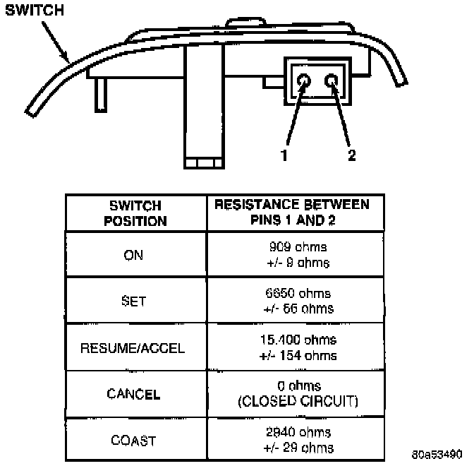

Cruise Control Switch: Testing and Inspection
For complete speed control system diagnosis, refer to the appropriate Powertrain Management/Computers and Control Systems/Testing and Inspection/Diagnostic Charts Procedures. To test each of the speed control switches only, refer to the following:WARNING: BEFORE ATTEMPTING TO DIAGNOSE, REMOVE OR INSTALL ANY AIRBAG SYSTEM OR RELATED STEERING WHEEL AND STEERING COLUMN COMPONENTS, YOU MUST FIRST DISCONNECT AND ISOLATE THE BATTERY NEGATIVE (GROUND) CABLE. WAIT 2 MINUTES FOR SYSTEM CAPACITOR TO DISCHARGE BEFORE FURTHER SYSTEM SERVICE. FAILURE TO DO SO COULD RESULT IN ACCIDENTAL AIRBAG DEPLOYMENT AND POSSIBLE PERSONAL INJURY.
1. Disconnect negative battery cable. Wait 2 minutes for airbag system capacitor to discharge.
2. Remove the two speed control switch modules from steering wheel. Refer to the removal/installation for procedures.
Speed Control Switch Continuity (Typical Switch Shown):

3. Check continuity of each individual speed control switch module as shown in chart. If OK, reinstall switch. If not OK, replace switch module assembly.